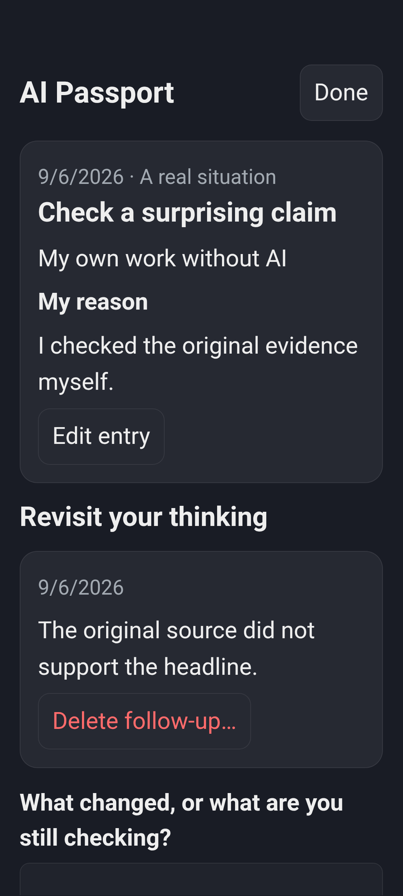

Pause before choosing help
What is the goal? Which part should I practise myself? What rules apply? Would a person or a simpler tool help?
AI Passport · 3.8 preview
Record why you used AI, chose another tool, asked a person or did the work yourself. Revisit what changed when you found new evidence.
Passport is part of the upcoming 3.8 app update. Check current app availability.
An illustrative reflection
Task: check a surprising claim about a Campus watering system. Explore how a learner might explain each choice.
These are fictional, prewritten examples. This demonstration accepts no journal text and saves no choices.
I want to practise judging a source myself before asking a tool to summarise it.
I compared the headline with the original two-day test and noticed that plant health was not measured.
The claim was broader than the evidence. Next time I will check the study conditions before repeating a number.

From remembering to reasoning
The 3.8 lesson self-check asks learners to explain an idea in their own words, on paper or aloud before seeing a model response and rubric. It does not automatically grade their beliefs or add answer points.
What is the goal? Which part should I practise myself? What rules apply? Would a person or a simpler tool help?
Record what you checked, what was your own work, what remains uncertain and what you will try next time.
A journal you can revisit
Decision entries, thinking entries and dated follow-ups make room for changing your mind. You can edit or delete your entries in the app.
Try the free investigation on paper →Personal profiles keep separate local progress and journals. Temporary Classroom Mode clears work when a session ends, times out or goes into the background. Use paper when a reflection needs to be kept.
These features describe the 3.8 preview. Sharing a device requires supervision; a local profile is not a private account.